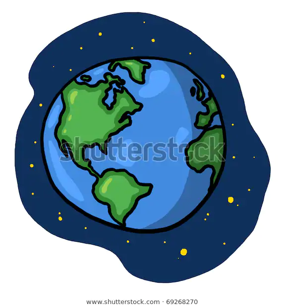

the earth
beograpyhy of the erarth


La Terra è il terzo pianeta dal Sole e l'unico oggetto astronomico noto per ospitare la vita . Secondo la datazione radiometrica e altre fonti di prova, la Terra si è formata oltre 4,5 miliardi di anni fa . [24] [25] [26] La gravità terrestre interagisce con altri oggetti nello spazio, in particolare il Sole e la Luna , che è l'unico satellite naturale della Terra . La Terra orbita attorno al Sole in 365.26 giorni, un periodo noto come un anno terrestre . Durante questo periodo, la Terra ruota attorno al suo asse circa 366.26 volte
About the earth
- La Terra è il terzo pianeta dal Sole e l'unico oggetto astronomico noto per ospitare la vita . Secondo la datazione radiometrica e altre fonti di prova, la Terra si è formata oltre 4,5 miliardi di anni fa . [24] [25] [26] La gravità terrestre interagisce con altri oggetti nello spazio, in particolare il Sole e la Luna , che è l'unico satellite naturale della Terra . La Terra orbita attorno al Sole in 365.26 giorni, un periodo noto come un anno terrestre . Durante questo periodo, la Terra ruota attorno al suo asse circa 366.26 volte.
- L'asse di rotazione della Terra è inclinato rispetto al suo piano orbitale, producendo stagioni sulla Terra. [27] L' interazione gravitazionale tra Terra e Luna provoca maree , stabilizza l'orientamento della Terra sul suo asse e ne rallenta gradualmente la rotazione . [28] La Terra è il pianeta più denso del Sistema Solare e il più grande e massiccio dei quattro pianeti terrestri .
- La litosfera terrestre è divisa in diverse placche tettoniche rigide che migrano attraverso la superficie per molti milioni di anni. Circa il 71% della superficie terrestre è coperta d'acqua , principalmente dagli oceani . [30] Il restante 29% è terra composto da continenti e le isole che insieme contengono molti laghi , fiumi e altre fonti di acqua che contribuiscono alla idrosfera . La maggior parte delle regioni polari della Terra sono coperte di ghiaccio , tra cui la calotta antartica e il ghiaccio marinodel ghiaccio artico . L'interno della Terra rimane attivo con un nucleo interno di ferro solido , un nucleo esterno liquido che genera il campo magnetico terrestre e un mantello convettivo che guida la tettonica a zolle
Top 3 facts about the earth:
- the earth rotation is gradually slowing
- the eart's was one belived to be the centre of the universe
- earth has a powerful magnetic field
| Names |
radius |
average
temperature |
| Mars |
3,403Km |
-462C° |